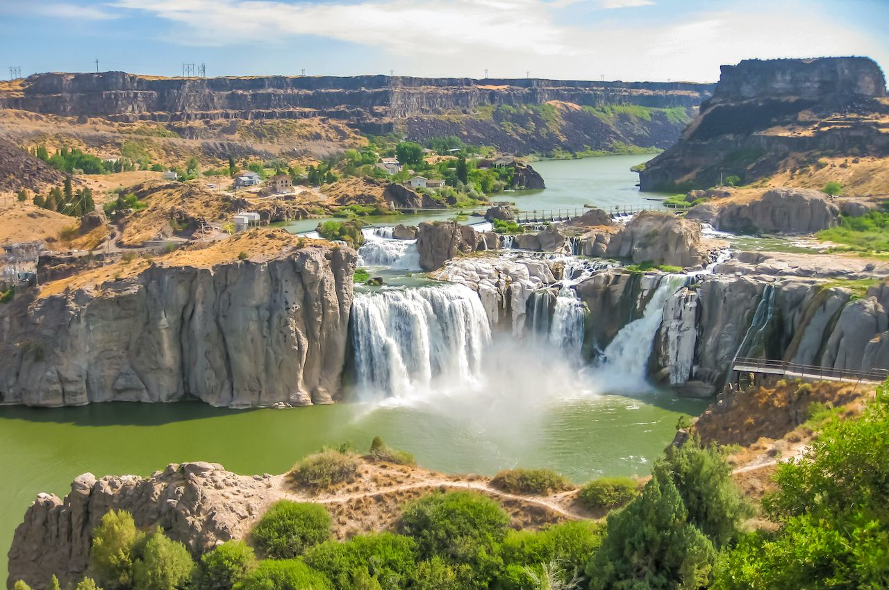
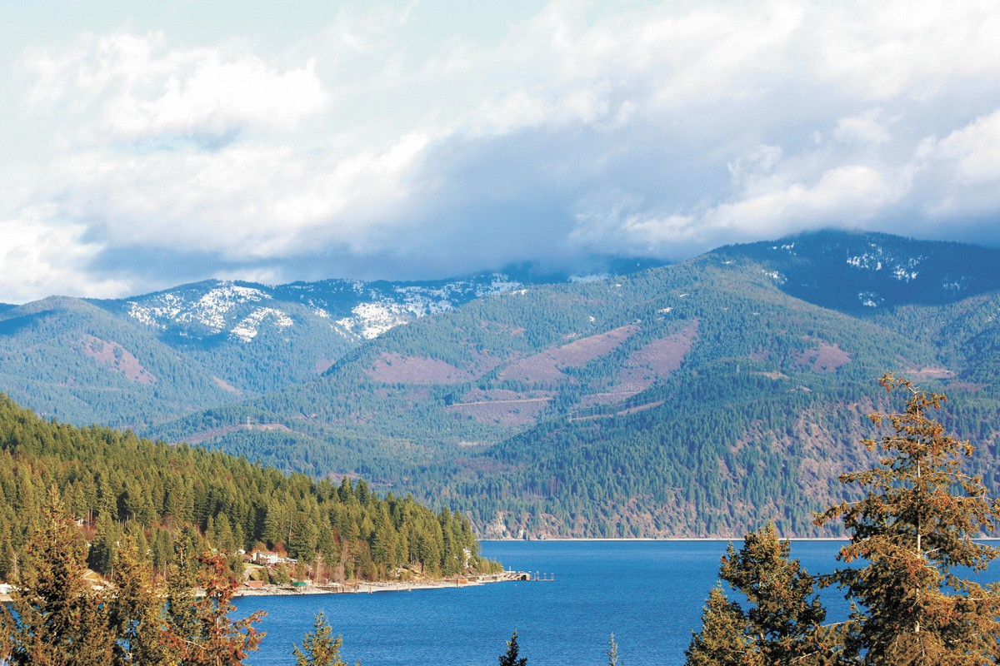
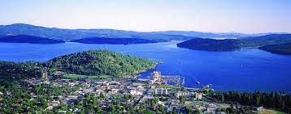

Idaho may be known for its crops or gems, but one thing that horror lovers like about the state are the ghost towns. Silver City and the Burke are some of the most known ghost towns, but there are many others...
People really love to smile in Pocatello, Idaho. This obsession with smiles went so far that it became a law. Yes, it is illegal not to smile in public in this little region of the state.
This region is home to the highest navigable river in the world. The river is called St. Joe River, and it flows from an elevation of nearly 7,000 feet. Most of its trailheads follow through moderate slopes that are easy to trek. Commonly known as shadowy St. Joe, the river is one of the finest spots for camping, hiking, fishing, and whitewater rafting in the region. The Scenic Byway travels along the river. It is named after the towering cottonwoods that beautify the oceanfront in addition to the idyllic mountainous landscape. Moose, bear, elk, deer, can be spotted on the river’s edge.:
Here are some other interesting facts about Idaho:
Here five North Idaho towns:
Here are three Idaho photos:
  